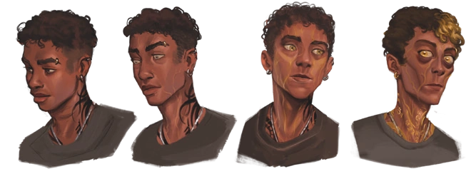
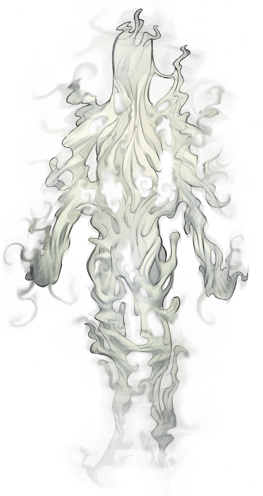
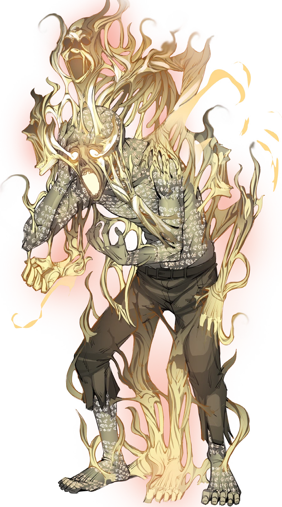

O Conhecimento é a entidade da consciência. Descobrir, aprender, conhecer, decifrar. Ter a própria percepção do Outro Lado e suas entidades agrada o elemento de Conhecimento.
A razão e lógica do Conhecimento reintegram e suprimem o caos da Energia. -Diário de Deus
O Conhecimento foi o terceiro elemento a ser apresentado, através do Ritual de Transcender e dos Escriptas em Ordem Paranormal: Desconjuração. Apesar de essa ter sido a sua introdução mais direta, ele já havia aparecido em O Segredo na Floresta na forma de Sigilos de Conhecimento no Símbolo Espiral de Santo Berço.
O comportamento da Entidade de Conhecimento parece estar conectado diretamente com a ideia de descobrir, lembrar, aprender e registrar informações. Acontecimentos que foram uma grande fonte de Medo, registrados em textos, palavras ou até Sigilos, agradam e fortalecem a entidade do Conhecimento. Compreender o Conhecimento por completo seria o equivalente a saber absolutamente tudo do Outro Lado.
Afinidade com o Elemento
Possuir uma afinidade ao elemento de Conhecimento significa ser escolhido pela sua Entidade. Dentre as várias consequências disso, é possível citar: Olhos amarelos ou esbranquiçados, inscrições na pele, perda de emoções, aura dourada, partes do corpo como braços, pernas e dedos sendo alongados e finos, ossos fragilizados, desaparecimento de lábios/boca e orelhas, profundas olheiras, além de resultar em uma personalidade mais racional, lógica, estratégica e muitas vezes manipuladora.

Rituais
Os rituais de Conhecimento estão sempre associados à percepção da Realidade, manipulação da comunicação humana, além de qualquer meio de comunicação com o Outro Lado e suas Entidades. O requisito mais comum para conjurar rituais de Conhecimento é se concentrar nos símbolos, com exceção do Ritual de Compreensão Paranormal que requer estar próximo à uma vela.
Um exemplo de ritual que permite ao usuário conceder um efeito é o Ritual de Alterar Memória, fazendo com que seu alvo se torne incapaz de recordar certos momentos de sua vida. O Ritual de Passagem de Conhecimento apresenta o efeito de transferir a consciência de um indivíduo para outro, cujos resultados podem ser variados.
Criaturas
As criaturas de Conhecimento se apresentam como lógicas e vagamente inteligentes, demonstrando uma espécie de consciência de suas próprias ações, tendo suas motivações individuais entre si. Muitas criaturas desse elemento são criadas a partir da mente humana e seus maiores medos, o que resulta em suas aparências tendo grandes similaridades com as de humanos.
Essas criaturas tem um comportamento mais neutro, se comparado com as criaturas de outros elementos, só atacando caso forem atacadas primeiramente. Elas agem de forma menos bestial e mais pensante, podendo sentir até medo e ansiedade. Estas criaturas são altamente capazes de realizar rituais.


Alguns exemplos de criaturas de Conhecimento são os Vultos e a Lembrados